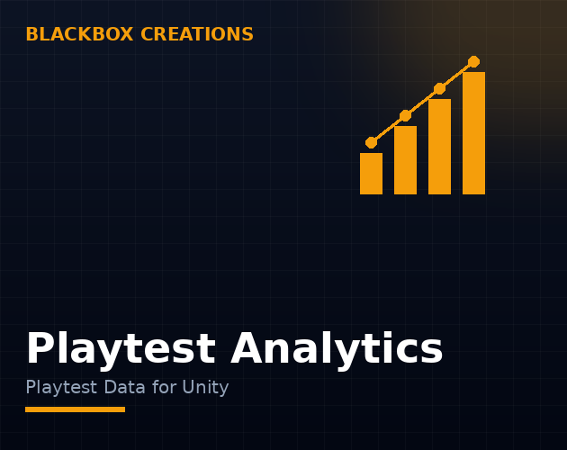

Tools / Playtest Analytics
Guessing what players do is not playtesting. Capture real playtest data locally — no backend, no accounts — and balance your game with evidence.
Instant download from the Unity Asset Store
One-time purchase · Unity Asset Store
Buy on the Unity Asset Store
After a playtest, everyone has opinions — and they usually disagree. One tester says the boss is too hard, another says it is too easy, and the developer is left guessing which one to believe. Session data ends the argument: it shows where players actually died, where they stalled, where they quit. Opinions are useful; evidence is better, and evidence is what playtest analytics is for.
Solo developers and small teams playtesting their Unity game before launch — anyone who has watched a tester struggle in silence and wished they knew exactly where and why.
The flow is deliberately boring, which is the point. During a playtest, the tool records events as they happen — deaths, completions, quits, time spent per section — and stores them locally on the device. After the session, you review the data where you build the game. No upload step, no dashboard login, no waiting for a cloud service to process anything. The data is there when the session ends, on the machine in front of you.
Measure the moments that decide your next change. Where do players die or fail repeatedly? Where do they stop progressing and wander? How long does each section actually take, versus how long you designed it to take? What do they never touch — an ability, a path, a whole system? Those four questions cover most of what a playtest needs to teach you. Everything else — heatmaps, funnels, session counts — is refinement on top of those answers.
Data is only useful if it changes a decision. The pattern that works: after each playtest, list the three worst moments the data shows — the most deaths, the longest stalls, the most quits — and fix exactly those three before the next session. Small, evidence-driven changes compound fast; a game balanced this way improves every single playtest, instead of oscillating on opinions.
You do not need a hundred testers. Five players already show you the big problems — the stuck points are usually the same for everyone, which is why they are stuck points. Small samples are also easier to run: friends, community members, a Discord call. The expensive mistake is waiting for a big playtest to learn what five people could have told you last week.
Unity Analytics is built for live games at scale: cloud dashboards, player accounts, data leaving the device. It is the right tool once your game is out and you want to understand thousands of players. Playtest Analytics is built for the stage before that: a handful of testers, local data, no setup beyond the tool. Different jobs, different shapes — one does not replace the other.
Local-only data has a privacy property no cloud service can match: it cannot leak, because it never leaves the device. There is no account for a tester to create, no consent flow to design, no data processor to worry about. For playtests with friends, community testers, or minors, that simplicity is not a nice-to-have — it is the reason the playtest happens at all.
A practical session looks like this. Before the testers arrive, write down the three questions you need answered — usually about one level, one boss, or one system. Let testers play without guidance; resist the urge to explain, because explanations hide the problems you need to see. Afterward, review the session data for exactly those three questions, list the worst moments, and fix the top three before the next session. One focused playtest a week beats one giant playtest a month.
Data shows what players do, not why they do it. If the numbers say players quit at a level but not whether they were bored, confused, or frustrated, you still need to watch someone play or ask them directly. Analytics finds the problem; a conversation with a tester explains it. Use both — the data tells you where to look, the tester tells you what it means.
A quick way to evaluate playtest analytics in one session: pick the three questions you need answered, run a single playtest with two or three players, and review the data the same day. If the session shows you at least one problem you would not have found by watching alone, the tool earns its place. If the data only confirms what you already knew, your questions were too easy — ask harder ones next time.
Every playtest produces opinions; only some of them are right. Playtest Analytics records what players actually do — where they struggle, stall, and quit — locally, with no backend and no accounts. The next balance change stops being a guess and starts being a decision backed by the last session's data.
Playtest analytics is the record of what players actually do in your game: where they go, where they get stuck, where they quit, what they ignore. It turns opinions from a playtest into evidence you can act on.
No. Playtest Analytics is local only — data stays on the device where the playtest happens. No backend to run, no accounts to create, no service that can go down or bill you monthly.
Locally, on the playtest device. You review the sessions where you build the game — no data leaves the device, which also keeps playtesting simple from a privacy point of view.
Start with the questions that decide your next change: where do players die or fail, where do they stop progressing, how long does each section take, and what do they never touch. Measure the moments that block progress first — everything else is nice to have.
Unity Analytics is a cloud service for live games at scale, with dashboards, accounts, and data leaving the device. Playtest Analytics is the opposite shape: local data for playtests during development, no cloud, no accounts, no setup beyond the tool itself.
Yes — that is the main use case. A handful of playtesters already shows you where players struggle; you do not need hundreds of sessions to find the stuck points. Small samples find big problems.
Recording events is lightweight work — timestamps and positions, not video. Keep the events you record focused on the questions you need answered, and the overhead stays negligible on any target.
Decide the questions first — what do you need to learn from this session? Then let testers play without guidance, collect the local session data, and review where they struggled, stalled, or quit. The data tells you what to fix next.
Crash reporting tells you when the game breaks. Playtest analytics tells you when the game fails the player — stuck, bored, confused, quitting. You need both, but only one of them tells you what to redesign.
Yes — that is its best use. If everyone dies at the same boss, the boss is too hard; if nobody uses an ability, it is too weak or too hidden. Session data turns balance arguments into numbers.
No. Local-only playtest data needs no accounts — testers just play, and the data stays on the device. That also makes recruiting testers easier: nothing to sign up for.
Yes — data that never leaves the device is private by construction. There is no cloud copy, no third-party dashboard, and nothing to leak. For playtests with friends, testers, or kids, that matters.